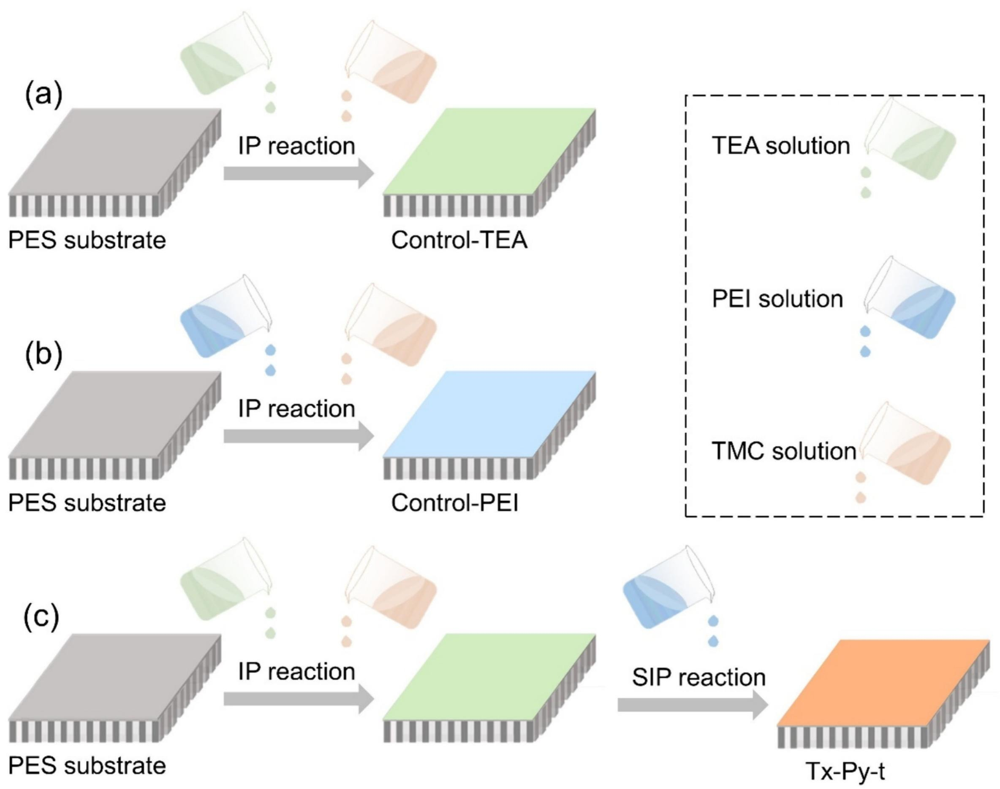

About
Experiences
 Sep, 2021 - Now
Sep, 2021 - Now
Publications ( / )
Enhanced Thin-Film Composite Nanofiltration Membranes via Substrate Pore Structure Engineering: Performance and Mechanistic Insights
Environ. Sci. Technol. 59 (2025) 15538-15546.
Molecular hybridization enhanced polyamide nanofiltration membranes for antibiotic desalination
J. Membr. Sci. 731 (2025) 124225.
A novel loose nanofiltration membrane with high permeance based on aqueous monomer 2,4,6-Trimethyl-m-phenylenediamine for efficient dye/salt separation
Sep. Purif. Technol. 363 (2025) 132292.
High temperature resistant polyamide thin film composite nanofiltration membrane based on polyethylene substrate
J. Membr. Sci. 721 (2025) 123811.
Theoretical and experimental study of high performance thin-film nanocomposite nanofiltration membranes by introducing calcium carbonate nanoparticles
J. Membr. Sci. 713 (2025) 123270.
Surfactants intervened construction of NF membranes for lithium extraction in high Mg2+/Li+ ratio and high concentration environments
J. Membr. Sci. 726 (2025) 124048.
Ethanol activation of polyester membrane for superior dye/salt separation performance
Sep. Purif. Technol. 353 (2025) 128476.
Ionic liquids tailored ultra-permeable antifouling nanofiltration membranes for water purification
J. Membr. Sci. 696 (2024) 122536.
Surfactant-interlayer assisted interfacial polymerization for constructing Janus nanofiltration membranes: Enhanced Li+/Mg2+ separation efficiency
J. Membr. Sci. 712 (2024) 123235.

Positively charged nanofiltration membranes with gradient structures for enhancing separation properties
Desalination 584 (2024) 117750.
A PDA@ZIF-8-Incorporated PMIA TFN-FO Membrane for Seawater Desalination: Improving Water Flux and Anti-Fouling Performance
Membranes 14 (2024) 272.
Theoretical and experimental research of polyelectrolyte multilayer membrane prepared by layer by layer self-assembly
Desalination 580 (2024) 117561.
Forward osmosis TFN membrane prepared by adjusting a PDA/GO-Fe3+-TA interlayer on porous CTA substrates
Sep. Purif. Technol. 330 (2024) 125353.
Development of high permeability nanofiltration membranes through porous 2D MOF nanosheets
Chem. Eng. J. 471 (2023) 144566.
Crown ether modulated high-performance nanofiltration membrane for water purification
Chem. Eng. Sci. 280 (2023) 119064.
Evading the permeance-selectivity trade-off dilemma in electrospray-assisted interfacial polymerization polyamide thin-film composite membrane through electrospinning nanofibers interlayer
Desalination 558 (2023) 116625.